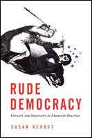

How American politics can become more civil and amenable to public policy solutions, while still allowing for effective argument
How American politics can become more civil and amenable to public policy solutions, while still allowing for effective argument


 How American politics can become more civil and amenable to public policy solutions, while still allowing for effective argument
How American politics can become more civil and amenable to public policy solutions, while still allowing for effective argument

|  |
Rude DemocracyCivility and Incivility in American PoliticsSusan Herbstcloth EAN: 978-1-43990-335-3 (ISBN: 1-4399-0335-2) |
Doris Graber Award, American Political Science Association, 2013
Association of American University Presses Book Jacket Award, 2011
"Rude Democracy is must reading for anyone trying to make sense of the current incivility in partisan politics and its implications for democracy in the United States. Herbst offers a fresh perspective that lays out the downside of incivility but also shows that there are opportunities to use it to move policy debates forward in a positive way that will benefit citizenship and democratic politics. The book provides a starting point for those seeking to do this."
—Robert Shapiro, Columbia University
Democracy is, by its very nature, often rude. But there are limits to how uncivil we should be. In this timely and important book, Susan Herbst explores how we discuss public policy, how we treat each other as we do, and how we can create a more civil national culture.
Herbst uses Sarah Palin and Barack Obama to illustrate her case. She scrutinizes Palin as both victim and perpetrator of incivility, including close analysis of her speeches on the 2008 campaign trail, the tone at her rallies, and her interactions with her audience. Herbst turns to a key 2009 speech to exemplify Barack Obama�s perspective on American civility as it pertains to contentious issues such as abortion, and she draws on the controversy surrounding the speech to demonstrate the nature of public opinion in the United States. She also dissects Palin�s and Obama�s roles in the 2009 health care debate and includes a fascinating chapter that examines how young people come to form their own attitudes about civility and political argument.
In Rude Democracy, Susan Herbst contends that Americans must recognize the bad habits and trends we have developed, use new media for more effective debate, and develop a tougher and more strategic political skin. She urges the American people to boost both the intelligence and the productivity of our debates, an effort that demands a commitment to the nature of argument itself. Rude Democracy outlines a plan for moving forward to create a more civil climate for American politics.
Excerpt available at www.temple.edu/tempress
"Susan Herbst's keen analysis of political rhetoric during the Obama years defuses prevailing alarmist warnings about the grim consequences of heated dialogue. She presents persuasive arguments that demonstrate the usefulness of civility while still acknowledging its serious drawbacks. Rude Democracy also features important proposals for improving the U.S. political climate. It deserves wide attention from political leaders, their staffs, and their publics."
—Doris A. Graber, University of Illinois at Chicago
"Rude Democracy is a smart and thoughtful discussion of a thorny problem. Herbst's focus on the �strategic� uses of civility and incivility makes good theoretical and empirical sense. Further, her call for educating Americans about how to debate is worthy and something she may well be able to implement. That Herbst does not add to the many shrill claims that civility is on the decline is refreshing. Her book is not trying to put old wine in a new bottle. Instead, she gets people to think about this topic in new ways. Herbst's engaging conclusion provides a compelling capstone to the general argument. In short, I am a fan of this book. Herbst�s voice will become a valued one in this important debate."
—John Geer, Vanderbilt University
"[Herbst] believes that bad manners in the public square are not all bad. Herbst discourages our urge to bemoan the boorishness of American political culture.... At the same time, she laments Americans� incapacity for listening carefully to their opponents and urges readers, especially bloggers and other drivers of the new media, to explore a more productive �culture of argument.�� The book sheds light on the present political moment�. [Herbst�s] critique of Sarah Palin is generous, and interesting �. In her conclusion�she offers some concrete suggestions."
—The New Republic
"Herbst brings a philosopher's point-of-view to the examination of civility (and its inverse) in contemporary American politics."
—Publishers Weekly online
"[T]he most interesting chapter analyzes a survey of college students' views on political discussion and civility.... Discussions go well beyond civility into issues such as the quality of arguments and reasons for the complex reactions to [Sarah] Palin.... Summing Up: Recommended."
—CHOICE
"Susan Herbst offers a relatively practical-minded discussion of civility and incivility in American political discourse.... Rude Democracy applies a deliberative democracy framework, which many readers will instantly know and appreciate.... The application of a deliberative democracy framework is not a problem for the validity of Herbst�s arguments.... As presented, the value of civility and incivility are considered only as the extent to which they can further democratic discourse.... Herbst demonstrates that incivility can serve a legitimate role in arguments on social topics."
—Political Communication
"Susan Herbst�s short, topical book offers an important historical and theoretical corrective to the resurgence of civility. Emphatically empirical in its approach, the book offers a compelling argument that civility � and endorsements of civility � are, like their uncivil counterparts, strategic moves in political dialogue. The book is thoroughly readable and very convincing.... Rude Democracy is a smart, engaging and interesting book, and I recommend it highly. It is thoroughly readable and accessible for students at all levels and for sophisticated lay audiences as well. Its thesis is provocative but well demonstrated through its evidence, and it should give pundits and citizens alike pause before they trot out another poorly-thought-through lament for the decline of civility."
—Social Forces
"Herbst�s volume is one of those rare works that should spur rethinking of crucial democratic concepts, civility, and partisanship, while displaying a model of such work through the grounded and insightful studies of Palin and Obama. The work also moves beyond the horizons of criticism to measure the tasks ahead in developing a culture of argument that welcomes a generation born of America at war and in the midst of the Great Recession. Civility and incivility constitute the strategic assets and costs of public deliberation."
—The International Journal of Communication
"Herbst has written a valuable, fair-minded book. It is a contribution to the literature of history, ethics, and public affairs, and it could easily be used to stimulate lively classroom conversations�the kind that spill into the halls when the hour has ended."
—Journalism and Mass Communication Quarterly
"Herbst�s endeavor to develop a theoretical foundation for civil discourse in the Internet age, where means of communication are in near constant flux, is commendable and largely successful. Herbst�s contention that incivility and civility should be viewed as strategic assets is potentially game changing and a contribution that all future scholarly work on incivility cannot ignore."
—Journal of Politics
"In this thought-provoking text, Susan Herbst tackles the role of civility in public discourse.... Herbst applies her analysis to three different sets of actors who used civility to pursue their goals.... I found Herbst�s surprisingly sympathetic analysis of [Sarah] Palin�s candidacy and communication strategy to be by far the most interesting of these sections.... I was fascinated by Herbst�s discussion of the impact of traditional and online media on civility.... Of course, these are only a few of the many interesting implications of the text. Throughout Rude Democracy, Herbst identifies potential empirical research topics and unmet scholarly needs into which a new generation of scholars can profitably delve."
—Perspectives on Politics
Acknowledgements
1. The Powerful-if Elusive-Nature of Civility
2. Sarah Palin and Her Publics
3. Barack Obama, Difference, and Civility
4. Our Future Leaders: College Students and Political Argument
5. Conclusion: Civility, Communication, and a Culture of Argument
Appendix I: Transcript of President Barack Obama's Commencement Address, University of Notre Dame, May 17, 2009
Appendix II: University System of Georgia Survey on Student Speech and Discussion
Notes
Bibliography
Index
 | Susan Herbst is President of the University of Connecticut. She is the author of many books and articles on American politics, including Numbered Voices: How Opinion Polling Has Shaped American Politics, Politics at the Margin: Historical Studies of Public Expression outside the Mainstream, and Reading Public Opinion: How Political Actors View the Democratic Process. Previously, she was Professor of Public Policy at Georgia Tech and Chief Academic Officer of the University System of Georgia, Officer in Charge and Provost of the State University of New York at Albany, Dean of the College of Liberal Arts at Temple University, and Chair of the Department of Political Science at Northwestern University. |
Political Science and Public Policy
General Interest
© 2015 Temple University. All Rights Reserved. This page: http://www.temple.edu/tempress/titles/2119_reg.html.